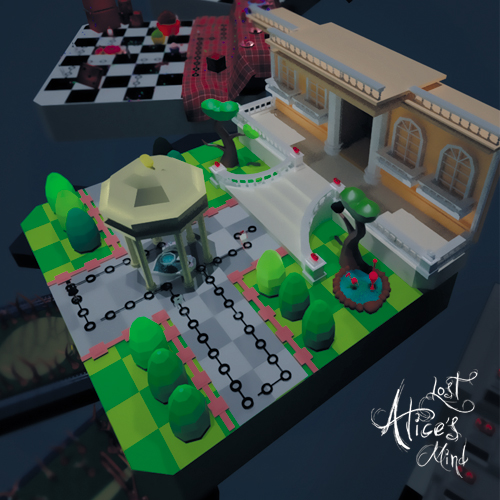

Interactive Media OtT
매년 패션의 유행이 바뀌면서 그에 따라 새로운 의상들이 꾸준히 판매된다.
평소 유행이나 의상에 관심이 많거나 패션 센스가 있는 사람이 아니면 옷을 구입하더라도
코디네이션을 하지 못해 난감해 하는 경우가 많다. 이러한 사람들을 위해서 모 패션 코디와 의상 추천
서비스를 제공하는 감성 코디 'OtT'를 기획하였다.

Multimedia Design Lost Alice’s Mind
3ds max 2016으로 제작되었고 이상한 나라의 앨리스를 모티브로 만들어진 전략 3D 퍼즐 게임 히트맨 고 (Hitman Go)를 참고하였다.
배경 스토리
이상해진 원더랜드에 갇혀버린 앨리스의 모험
총 20스테이지를 탈출을 해야 한다

Moving Image Animation Forest
크고 작은 나무들과 오두막집 그리고 작은 들풀들과 같은 오브젝트들을 이용하여 평범한 숲속의 모습을 표현하려고 하였다.
3DS MAX 2016과 Substance Painter로 나무 질감과 풀을 최대한 사실적으로 표현하려고 하였다.